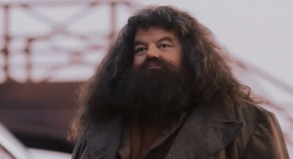
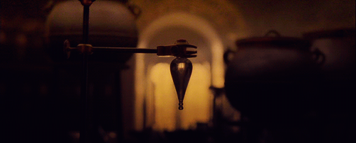
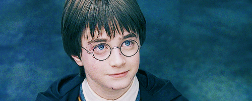
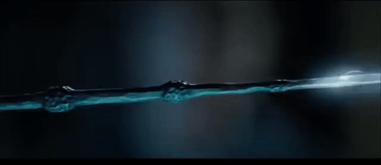

1. Whenever you saw Harry, Ron and Hermione doing schoolwork in the movies, Daniel Radcliffe, Rupert Grint and Emma Watson were actually doing their homework.
2. Robbie Coltrane, who plays Hagrid in the films, was the first actor to be cast in the series.
3. In Harry Potter and the Order of the Phoenix, Arthur Weasley was originally supposed to die, but his death was replaced with the death of Sirius.
4. In the Amortentia potion, Hermione recognizes a few smells. The third one is Ron's hair.
5. The feasts of food in Harry Potter and the Sorcerer's Stone was all real food ... but it wasn't really enjoyed, since it spoiled quickly because of hot lights on set.
6. The final book almost had two different titles. One was Harry Potter and the Elder Wand, and the other was Harry Potter and the Peverell Quest.

7. In the second film, there's a scene where Harry explains he's missing a sock. For that scene, Radcliffe had to shave one leg.
8. Harry's eyes are described as green in the books, but Radcliffe's eyes aren't green. They tried green contacts, but Radcliffe had a bad reaction to them and couldn't use.
9. Makeup artists applied Harry's scar over 2,000 times, and Radcliffe went through 160 pairs of glasses.
10. Radcliffe broke about 80 wands throughout filming because he kept using them as drumsticks.
